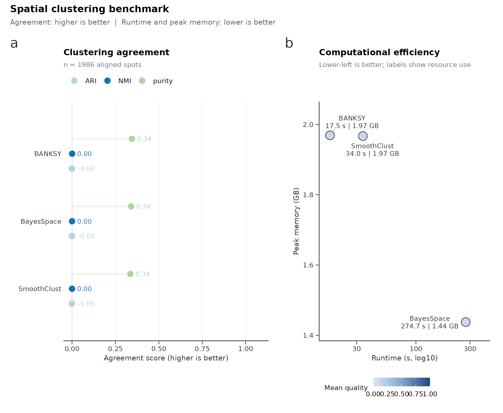

Spatial domain benchmark workflow
Source:vignettes/spatial-benchmark-workflow.Rmd
spatial-benchmark-workflow.RmdThis article compares spatial domain clustering methods with [RunSpatialBenchmark()]. Each method runs in an isolated R process; results include ARI, NMI, purity, runtime, and peak memory against a gold-standard label column. Visualize the result with [SpatialBenchmarkPlot()].
Supported producers include BayesSpace,
BANKSY, and SmoothClust. This workflow is
separate from scRNA batch integration benchmarking
([RunIntegrationBenchmark()]).
Load data and define a gold standard
The bundled Visium pancreas subset is used here. For demonstration, a simple cyclic domain label is assigned as the gold standard. Replace this with manual annotations or reference domains for real analyses.
library(scop)
#> ⬢ . ⬡ ⬢ .
#> _____ _________ ____
#> / ___// ___/ __ ./ __ .
#> (__ )/ /__/ /_/ / /_/ /
#> /____/ .___/.____/ .___/
#> /_/
#> ⬢ . ⬡ . ⬢
#> ------------------------------------------------------------
#> Version: 0.9.0 (2026-08-21 update)
#> Website: https://mengxu98.github.io/scop/
#>
#> Python environment initialization is disabled
#> To enable it, set: options(scop_env_init = TRUE)
#>
#> The message can be suppressed by:
#> suppressPackageStartupMessages(library(scop))
#> or options(log_message.verbose = FALSE)
#> ------------------------------------------------------------
data(visium_human_pancreas_sub)
spatial <- visium_human_pancreas_sub
spatial$gold_domain <- factor(
paste0("domain_", (seq_len(ncol(spatial)) - 1) %% 3 + 1)
)
table(spatial$gold_domain)
#>
#> domain_1 domain_2 domain_3
#> 662 662 662Run the benchmark
Methods share the same spot set. Tune per-method arguments through
method_params when backends need different PCA counts or
layers.
bench <- RunSpatialBenchmark(
spatial,
gold_standard = "gold_domain",
method_params = list(
BayesSpace = list(n.PCs = 5, n.HVGs = 200),
BANKSY = list(layer = "counts"),
SmoothClust = list(layer = "counts", min_spots = 1)
),
verbose = FALSE
)
bench$summary
#> method workflow ARI NMI purity runtime_s
#> 1 BayesSpace SpatialDomain -0.0007844788 1.295315e-04 0.3398792 274.657
#> 2 BANKSY SpatialDomain -0.0010452685 4.916507e-04 0.3449144 17.454
#> 3 SmoothClust SpatialDomain -0.0009201495 3.559811e-05 0.3358510 34.034
#> baseline_memory_mb peak_memory_mb memory_delta_mb n_evaluated n_clusters
#> 1 663.4297 1472.207 808.7773 1986 3
#> 2 662.9844 2016.246 1353.2617 1986 6
#> 3 663.3750 2014.082 1350.7070 1986 3
#> status error
#> 1 success
#> 2 success
#> 3 successInspect the result object
RunSpatialBenchmark() returns a
spatial_benchmark_result list:
-
$summary: quality and resource metrics per method; -
$predictions: aligned domain labels per spot; -
$metrics: long metric table for custom plots.
str(bench$summary, max.level = 1)
#> 'data.frame': 3 obs. of 13 variables:
#> $ method : chr "BayesSpace" "BANKSY" "SmoothClust"
#> $ workflow : chr "SpatialDomain" "SpatialDomain" "SpatialDomain"
#> $ ARI : num -0.000784 -0.001045 -0.00092
#> $ NMI : num 1.30e-04 4.92e-04 3.56e-05
#> $ purity : num 0.34 0.345 0.336
#> $ runtime_s : num 274.7 17.5 34
#> $ baseline_memory_mb: num 663 663 663
#> $ peak_memory_mb : num 1472 2016 2014
#> $ memory_delta_mb : num 809 1353 1351
#> $ n_evaluated : int 1986 1986 1986
#> $ n_clusters : int 3 6 3
#> $ status : chr "success" "success" "success"
#> $ error : chr "" "" ""
head(bench$predictions)
#> spot_id gold_standard method prediction
#> 1 TGGTATCGGTCTGTAT-1 domain_1 BayesSpace 1
#> 2 ATTATCTCGACAGATC-1 domain_2 BayesSpace 1
#> 3 TGAGATCAAATACTCA-1 domain_3 BayesSpace 2
#> 4 CTGGTCCTAACTTGGC-1 domain_1 BayesSpace 1
#> 5 ATAGTCTTTGACGTGC-1 domain_2 BayesSpace 1
#> 6 GGGTGGTCCAGCCTGT-1 domain_3 BayesSpace 2Plot benchmark views
SpatialBenchmarkPlot() defaults to a
publication-oriented overview that combines clustering agreement with
runtime and peak-memory efficiency.
SpatialBenchmarkPlot(data = bench, plot_type = "overview")
Other views:
SpatialBenchmarkPlot(data = bench, plot_type = "quality")
SpatialBenchmarkPlot(data = bench, plot_type = "efficiency")
SpatialBenchmarkPlot(data = bench, plot_type = "heatmap")What to report
A spatial benchmark report should include:
- the gold-standard column and number of domains;
- methods compared and any
method_paramsoverrides; -
$summarywith ARI, NMI, purity, runtime, and peak memory; - the overview or quality plot;
- failed or unavailable methods (status column) when backends are missing.
Agreement metrics are higher when better; runtime and peak memory are lower when better.